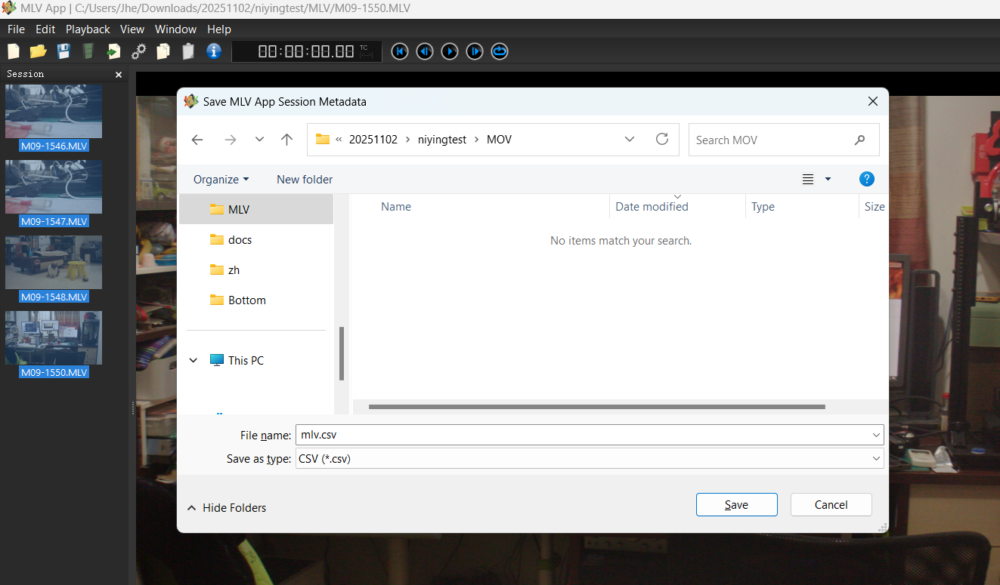
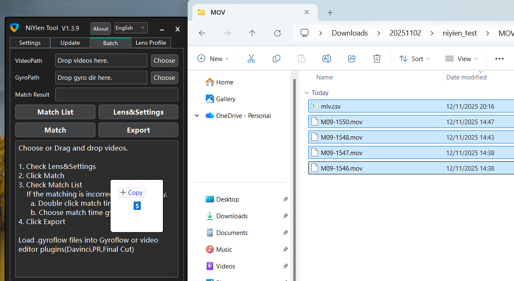

Canon Magic Lantern Gyro Stabilization
Note:
MLV App version must be at least V1.15
Please first watch the following videos to understand the normal video stabilization process.
ProRes Workflow:
Step 1: Export MLV videos to ProRes via MLV App.
Step 2: Select all MLV videos, click File, select Save Session Metadata, and save as mlv.csv.
Important Note:
In MLV App, double-click each video first, then export mlv.csv.
Alternatively, export mlv.csv after exporting ProRes.


Step 3: Import both ProRes videos and mlv.csv into NiYien Tool.

Other steps are the same as in the video tutorials.
CDNG Workflow:
CDNG requires using plugins in DaVinci Resolve or Premiere Pro, you'll need to watch
4.1 - Video Editor Plugin
,
4.5 - RAW, Log, 10-bit, 12-bit Videos
.
If you've used Squeeze option or anamorphic lenses, you'll also need to watch
4.3 - Anamorphic lens